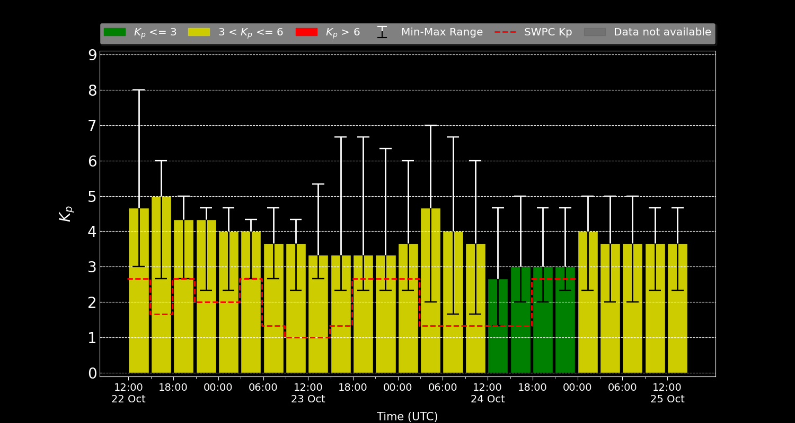

Current Predicted Conditions: MINOR STORM
Current Observed Conditions: QUIET (Observed Kp data available up to 2025-10-22 12:00 UTC)

| Time (UTC) | Probability (Kp ≥ 6) | Min Kp Index1 | Max Kp Index2 | Median Kp Index3 | Activity45 |
|---|---|---|---|---|---|
| 2025-10-22 15:00 | 11% | 3- | 6 | 5 | QUIET - G2 |
| 2025-10-23 15:00 | 22% | 2+ | 7- | 3+ | QUIET - G2 |
| 2025-10-23 18:00 | 22% | 2+ | 7- | 3+ | QUIET - G2 |
| 2025-10-23 21:00 | 11% | 2+ | 6+ | 3+ | QUIET - G2 |
| 2025-10-24 00:00 | 11% | 2+ | 6 | 4- | QUIET - G2 |
| 2025-10-24 03:00 | 22% | 2 | 7 | 5- | QUIET - G3 |
| 2025-10-24 06:00 | 22% | 2- | 7- | 4 | QUIET - G2 |
| 2025-10-24 09:00 | 11% | 2- | 6 | 4- | QUIET - G2 |
Note: Kp ≥ 6+ indicate potential auroral activity at Berlin latitudes.
| Level | Kp Value | Description |
|---|---|---|
| Quiet | 0-3 | Quiet conditions |
| Active | 4 | Moderate geomagnetic activity |
| Minor Storm (G1) | 5 | Weak power grid fluctuations. For more details see NOAA [G1] |
| Moderate Storm (G2) | 6 | High-latitude power systems affected. For more details see NOAA [G2] |
| Strong Storm (G3) | 7 | Power systems may need voltage corrections. For more details see NOAA [G3] |
| Severe Storm (G4) | 8 | Possible widespread voltage control problems. For more details see NOAA [G4] |
| Extreme Storm (G5) | 9 | Widespread power system voltage control problems. For more details see NOAA [G5] |
This is an automated alert from the Kp Index Monitoring System using GFZ Space Weather Forecast.
© 2025 GFZ Helmholtz Centre for Geosciences | GFZ Helmholtz-Zentrum für Geoforschung
The data/data products are provided "as-is" without warranty of any kind either expressed or implied, including but not limited to the implied warranties of merchantability, correctness and fitness for a particular purpose. The entire risk as to the quality and performance of the Data/data products is with the Licensee.
In no event will GFZ be liable for any damages direct, indirect, incidental, or consequential, including damages for any lost profits, lost savings, or other incidental or consequential damages arising out of the use or inability to use the data/data products.